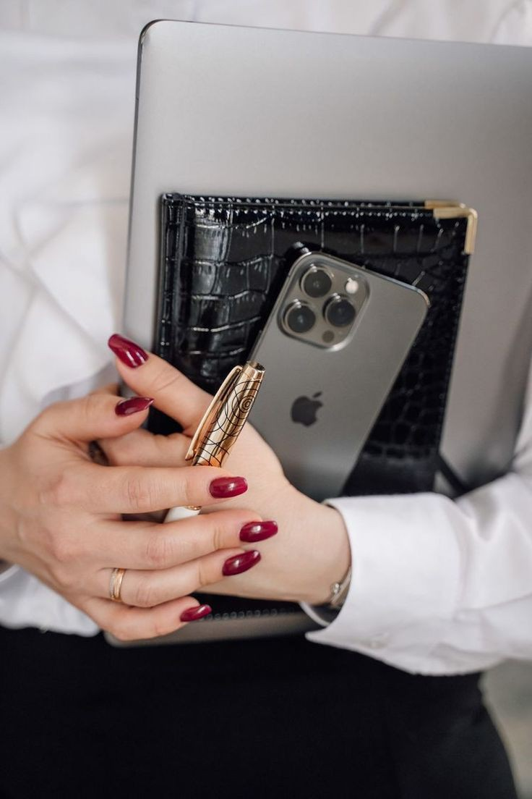
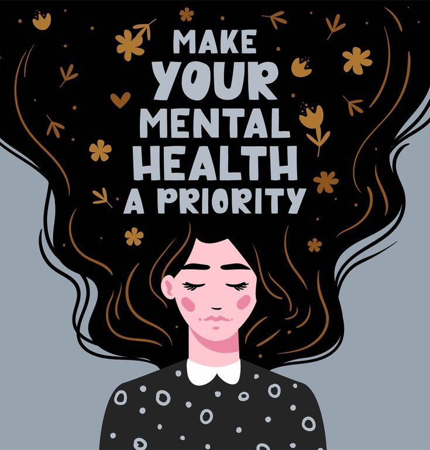

<!DOCTYPE html>
<html>
    <head>
    <link rel="stylesheet" href="styleblog.css">
        <script src="https://kit.fontawesome.com/ec2b6f283f.js" crossorigin="anonymous"></script>
    </head>
</html>
<header>
    <div class="header">
        <a href="" class="S1"><h3>Shop</h3><i class="fa-solid fa-shop fa-bounce" style="color: #ffffff;"></i></a>
        <a href="./Blog.html"><h3>Blog</h3><i class="fa-solid fa-blog fa-bounce" style="color: #fdfdfd;"></i></a>
        <a href="./Contact.html"><h3>Contact</h3><i class="fa-solid fa-address-book fa-bounce" style="color: #fafafa;"></i></a>
        <a href="./honor.html"><h3>Honor</h3><i class="fa-solid fa-award fa-bounce" style="color: #ffffff;"></i></a>
        <a href="./Activities.html"><h3>Activities</h3><i class="fa-solid fa-chart-line fa-bounce" style="color: #ffffff;"></i></a>
    </div>
    <div class="heart"></div>
</header>
<a href="./index.html"></a>
<body>
    <button onclick="topFunction()" id="myBtn" title="Go to top">Top</button>
    <script>
        let mybutton = document.getElementById("myBtn");
        
        window.onscroll = function() {scrollFunction()};
        
        function scrollFunction() {
          if (document.body.scrollTop > 20 || document.documentElement.scrollTop > 20) {
            mybutton.style.display = "block";
          } else {
            mybutton.style.display = "none";
          }
        }
        
        function topFunction() {
          document.body.scrollTop = 0;
          document.documentElement.scrollTop = 0;
        }
        </script>

<p class="p1">Hey ladies,you have the power to be amazing entrepreneurs.Don't let anyone or anything hold you back.Embrace your strengths,follow your passions,and believe in yourself.Remember,you have unique perspectives and ideas that the world needs.Take that leap of faith, chase your dreams, and show everyone what you're capable of.<i class="fa-solid fa-face-grin-hearts fa-bounce" style="color: #e90707;"></i></p>

<p class="p2">Let's break a sweat and unleash our athletes!Sports not only keep us fit and healthy,<br> but also boost our confidence,build teamwork skills,and help us push our limits.<br>Whether it's hitting the field, diving into the pool , or hitting the gym,<br>let's embrace the joy of sports and show the world what we're made of.<br>Let's inspire each other and make our mark in the world of sports.<i class="fa-regular fa-face-smile fa-beat" style="color: #f93301;"></i></p>

<p class="p3">Ladies,it's time to pamper ourselves and embrace our unique beauty . Taking care of ourselves is not just about looking good , but also about feeling good from within.Treat yourself to a relaxing spa day , indulge in skincare routines, and expriment with makeup that makes you feel confident .Remember ,self-care is not selfish, it's necessary.So,take that time to recharge,love yourself,and let your inner beauty shine through.You are absolutely stunning just the way you are!<i class="fa-solid fa-hand-peace fa-flip" style="color: #38bdc7;"></i></p>

<p class="p4">Hey girl,it's important to prioritize your mental well-being .<br> Take time for yourself,practice self-care activities like meditation, journaling,or going for walks in nature.<br>Surround yourself with positive people who lift you up and don't<br> hesitate to reach out for support when you need it.<br>Remember , it's okay to take breaks,set boundaries,and prioritize self-care.<br>Your mental health matters,and you deserve to feel happy and fulfilled. You got this,girl!<i class="fa-brands fa-gratipay fa-beat" style="color: #ff1414;"></i></p>

<p class="p5">Hey mama-to-be,congratulations on your beautiful journey!Taking care of yourself during pregnancy in super important.Make sure to eat a balanced diest, stay hydrated , and get reguler exercise (with your doctor's approval,of course).Take your prenetal vitamins and get plenty of rest.You're doing amazing , and your little one is lucky to have you ase their mom!<i class="fa-solid fa-baby fa-beat-fade" style="color: #f5d532;"></i></p>
</body>
<footer>
    <h2>© 2023 Ichraq's project</h2>
</footer>
